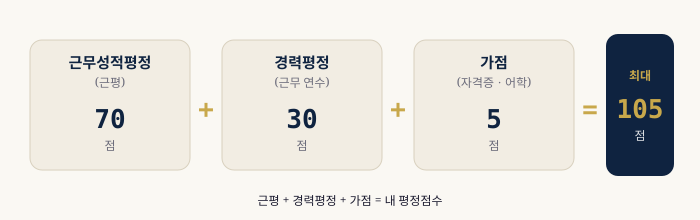
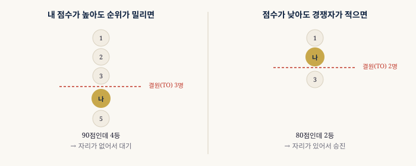

공무원 근무성적평정(근평) 완전 가이드
— 등급·점수·반영 비율
1 근무성적평정이란?
근무성적평정(이하 '근평')은 공무원이 반기(6개월)마다 받는 업무 능력 평가입니다. 승진후보자명부를 작성할 때 최대 70점으로 반영되며, 평정점수 전체에서 가장 큰 비중을 차지합니다.
근평은 보통 수·우·양·가 4개 등급으로 이루어지며, 등급별로 점수가 정해져 있습니다. 상위 등급을 받을수록 평정점수가 높아져 승진에 유리합니다.

2 등급별 점수 (5급 이하 기준)
5급 이하 공무원의 근평 등급별 점수는 아래와 같습니다. 각 등급은 반기 1회 평정분의 점수이며, 승진에는 최근 수 개 반기의 평균을 활용합니다.
| 등급 | 비율 강제 배분 | 의미 |
|---|---|---|
| 수 (최우수) | 상위 20% 이내 | 탁월한 성과 |
| 우 (우수) | 다음 40% 이내 | 기대 이상 |
| 양 (보통) | 나머지 | 기대 수준 |
| 가 (미흡) | 하위 10% 이내 | 개선 필요 |
3 근평 점수 산출 방법
각 등급에는 기관·직렬·직급별로 미리 정해진 점수(70점 만점 기준)가 배정되어 있습니다. 승진에 반영되는 근평 점수는 단순히 반기 점수를 다 더해 나누는 게 아니라, 연도별(상반기+하반기 평균)로 묶은 뒤 최근 연도일수록 비중을 다르게 적용한 가중평균입니다. 직급에 따라 반영 연도 수와 연도별 비중이 다릅니다.
| 직급 | 반영 연도 | 연도별 비중 |
|---|---|---|
| 5급·6급 | 최근 3년 | 34% + 33% + 33% |
| 7급·8급 | 최근 2년 | 50% + 50% |
| 9급 | 최근 1년 | 100% |
최근 1~2년 평균: 우1(63.7점)+양1(52.7점) ÷ 2 = 58.20점 × 50% = 29.10점
33.43 + 29.10 = 근무성적평정 62.53점
4 등급 강제 배분 — 조직 내 경쟁
근평은 절대평가가 아닌 상대평가입니다. '수' 등급은 평정 대상자의 상위 20% 이내에만 부여할 수 있기 때문에, 아무리 열심히 일해도 조직 내 경쟁에서 이겨야 높은 등급을 받을 수 있습니다.
특히 팀원이 적은 소규모 부서에서는 '수' 등급 자체가 나오지 않는 경우도 있어, 배치 부서에 따라 근평에 구조적 불이익이 생길 수 있습니다.
5 근평이 승진에 미치는 실제 영향
서울시 본청 행정직 기준 수1등급(70.0점)과 양1등급(52.7점)의 차이는 반기당 17.3점입니다. 4반기 평균 기준으로 한 반기 차이가 약 4.3점을 좌우합니다. 경력평정과 가점 차이가 보통 1~3점 이내임을 감안하면, 단 한 반기의 '수' vs '양' 차이가 몇 년치 경력 격차를 뒤집을 수 있습니다.
| 4반기 등급 조합 (서울시 본청 행정직 기준) | 근무성적평정 |
|---|---|
| 수1·수1·수1·수1 | 70.00점 |
| 수1·수1·우1·우1 | 66.85점 |
| 우1·우1·우1·우1 | 63.70점 |
| 우1·우1·우1·양1 | 60.95점 |
| 우1·우1·양1·양1 | 58.20점 |

내 근평 등급 조합으로 최종 평정점수를 계산해보세요.
몇 반기 치를 입력해도 자동으로 평균을 계산해드립니다.